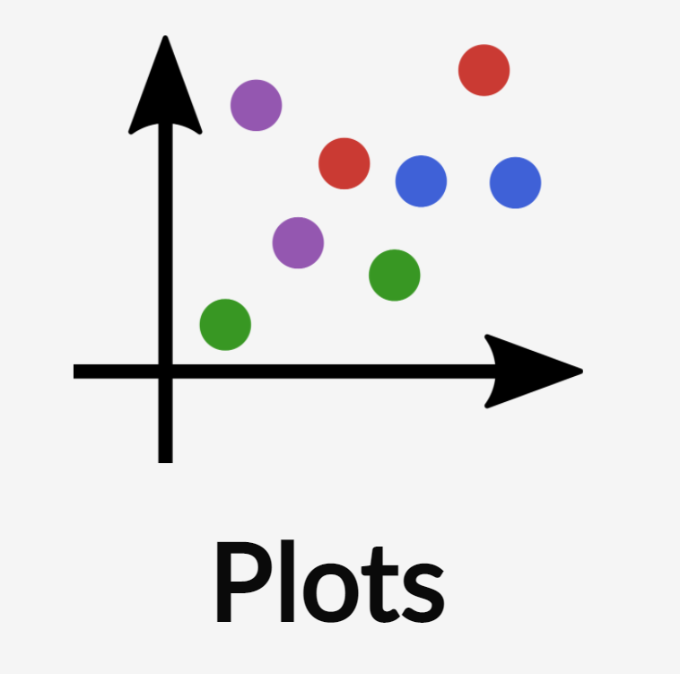
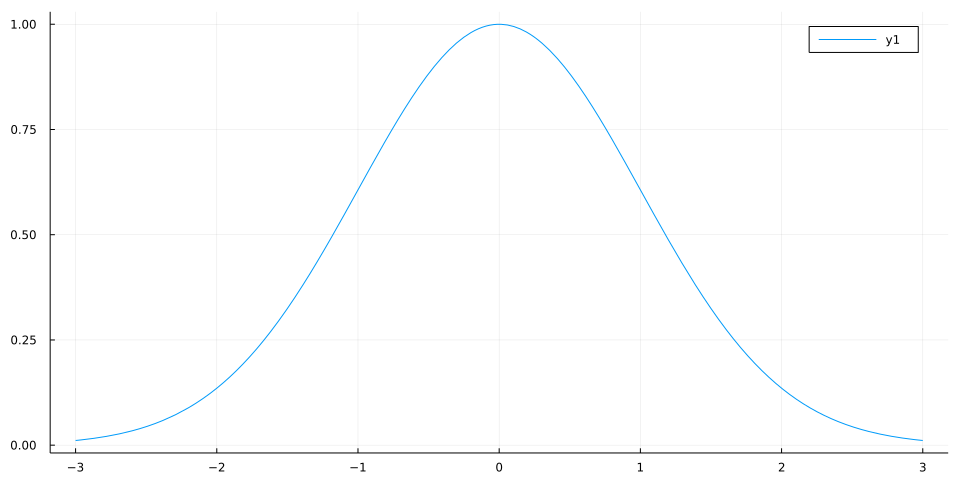
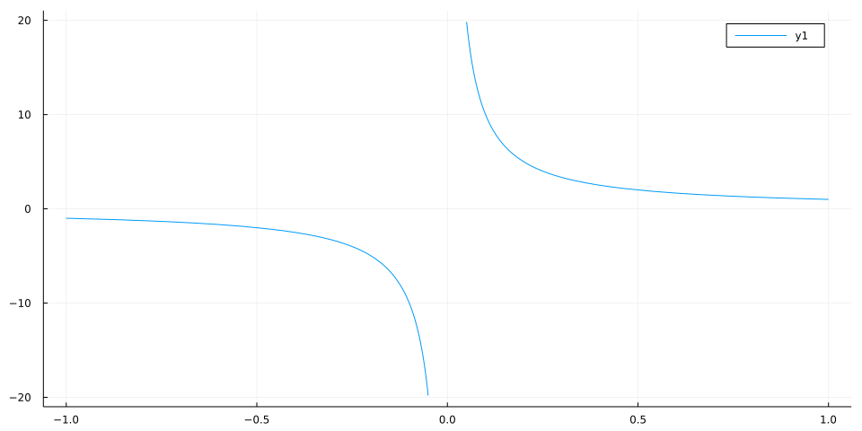
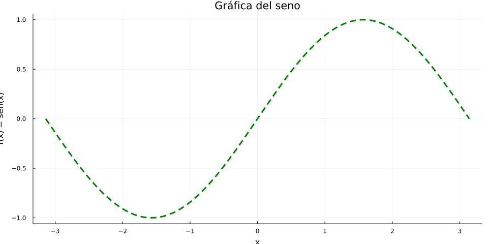

using Plots
f(x) = exp(-x^2 / 2)
plot(f, -3, 3)Introducción a Julia
Orientada a computación científica y análisis de datos
Alfredo Sánchez Alberca
asalber@ceu.es
https://aprendeconalf.es
Introducción a Julia
¿Por qué Julia?
Julia es otro lenguaje de programación más, orientado a cálculo científico el análisis de datos similar a Python, R o Matlab.
¿De veras necesitamos aprender otro lenguaje más?
¿Qué pretende ser Julia?
De los creadores de Julia:
We want a language that is:
- Open source.
- With the speed of C.
- Obvious, familiar mathematical notation like Matlab.
- As usable for general programming as Python.
- As easy for statistics as R.
- As natural for string processing as Perl.
- As powerful for linear algebra as Matlab.
- As good at gluing programs together as the shell.
- Dirt simple to learn, yet keeps the most serious hackers happy.
¿Qué es Julia?
- Julia es un lenguaje de alto nivel con una sintaxis fácil de aprender (similar a Python, R o Matlab) que permite escribir símbolos matemáticos en las expresiones (UTF-8).
- Julia es un lenguaje muy veloz (equiparable a C en muchas tareas.)
- Lenguaje dinámico (tipado dinámico y despacho múltiple).
- De propósito general, pero orientado a la computación científica y el análisis de grandes volúmenes de datos.
- Creado en 2019 en el MIT por el equipo del profesor Edelman.
- Última versión: 1.7 (bastante maduro).
- Desarrollado por una gran comunidad científica.
- Repositorio de paquetes de código abierto con más de 3000 paquetes en dominios muy diversos.
Comparativa de rapidez de Julia con otros lenguajes

Comparativa de Julia con otros lenguajes
Algunas razones más para pensárselo
- Evita el problema de la doble reescritura de código (prototipo + versión operativa).
- Permite la programación paralela y distribuida.
- Puede ejecutar código realizado en otros lenguajes como C, Fortran, Python, R, Matlab, etc.
Instalación de Julia
- Descargar e instalar Julia.
- Añadir Julia al PATH del sistema.
Una vez instalado, para ejecutar el intérprete de Julia basta con abrir una terminal y teclear julia.
El REPL de Julia
El REPL1 de Julia permite ejecutar código de Julia tecleándolo directamente en la terminal.
Tiene, además, varios modos:
;para abrir el modo shell.]para abrir el modo de gestión de paquetes.?para abrir el modoe de ayuda.to open help mode<backspace>para volver al modo normal.
IDEs para Julia

Visual studio code
Visual Studio Code con la extensión para Julia
Jupyter
- Descargar e instalar Python
- Descargar e instalar Jupyter
- Instalar el paquete IJulia:
Jupyter con el kernel de Julia
Tipos de datos y variables
Tipos de datos numéricos
- Enteros:
Int64(64 bits por defecto). - Racionales:
Rational{Int64}. Utilizando el operador//. - Reales:
Float64(64 bits por defecto). - Complejos:
Complex{Int64}. Utilizandoimdespués de la parte imaginaria.
Para averiguar el tipo de un dato se utiliza la función typeof().
Ejemplos de tipos de datos numéricos
Jerarquía de tipos de datos numéricos

Constantes predefinidas
| Símbolo | Descripción |
|---|---|
pi o π |
Número irracional \(\pi\) |
ℯ (\euler + TAB) |
Número irracional \(e\) |
Inf |
Infinito |
NaN |
Valor no numérico |
Missing |
Valor desconocido |
Ejemplo de constantes predefinidas
Tipos de datos alfanuméricos
- caracteres:
Char. Se representan entre comillas simples. - Cadenas:
String. Se representan entre comillas dobles.
Tipo de datos booleanos
- Booleanos:
bool. Son un subtipo de los enterosInteger.
Solo contienen dos posibles valores: true (1) y false (0).
Variables
Como lenguaje de tipado dinámico, no es necesario declarar una variable antes de usarla. Su tipo se infiere directamente del valor asociado.
No obstante, para variables de ámbito local, por ejemplo en funciones, es posible fijar el tipo de una variable indicándolo detrás de su nombre con el operador ::.
Nombres de variables
Julia reconoce la codificación Unicode (UTF-8), lo que permite utilizar caracteres con tildes, letras griegas, símbolos matemáticos y hasta emoticonos en los nombres de variables o funciones. Para ello se utilizan códigos especiales (en muchos casos son los mismos que en \(\LaTeX\)), pulsando después la tecla de tabulación.
Distingue entre mayúsculas y minúsculas.
Operadores aritméticos
| Operador | Descripción |
|---|---|
x + y |
Suma |
x - y |
Resta |
x * y |
Producto |
x / y |
División |
x ÷ y |
Cociente división entera |
x % y |
Resto división entera |
x ^ y |
Potencia |
Operadores de comparación
| Operador | Descripción |
|---|---|
== |
Igualdad |
!=, ≠ |
Desigualdad |
< |
Menor que |
<=, ≤ |
Menor o igual que |
> |
Mayor que |
>=, ≥ |
Mayor o igual que |
Operadores booleanos
| Operador | Descripción |
|---|---|
!x |
Negación |
x && y |
Conjunción (y) |
x || y |
Disyunción (o) |
Funciones numéricas predefinidas
Funciones de redondeo
| Función | Descripción |
|---|---|
round(x) |
Devuelve el entero más próximo a x |
round(x, digits = n) |
Devuelve al valor más próximo a x con n decimales |
floor(x) |
Redondea x al próximo entero menor |
ceil(x) |
Redondea x al próximo entero mayor |
trunc(x) |
Devuelve la parte entera de x |
Ejemplo de funciones de redondeo
Funciones de división
| Función | Descripción |
|---|---|
div(x,y), x÷y |
Cociente de la división entera |
fld(x,y) |
Cociente de la división entera redondeado hacia abajo |
cld(x,y) |
Cociente de la división entera redondeado hacia arriba |
rem(x,y), x%y |
Resto de la división entera. Se cumple x == div(x,y)*y + rem(x,y) |
mod(x,y) |
Módulo con respecto a y. Se cumple x == fld(x,y)*y + mod(x,y) |
gcd(x,y...) |
Máximo común divisor positivo de x, y,… |
lcm(x,y...) |
Mínimo común múltiplo positivo de x, y,… |
Ejemplo de funciones de división
Funciones para el signo y el valor absoluto
| Función | Descripción |
|---|---|
abs(x) |
Valor absoluto de x |
sign(x) |
Devuelve -1 si x es positivo, -1 si es negativo y 0 si es 0. |
Raíces, exponenciales y logaritmos
| Función | Descripción |
|---|---|
sqrt(x), √x |
Raíz cuadrada de x |
cbrt(x), ∛x |
Raíz cúbica de x |
exp(x) |
Exponencial de x |
log(x) |
Logaritmo neperiano de x |
log(b,x) |
Logaritmo en base b de x |
log2(x) |
Logaritmo en base 2 de x |
log10(x) |
Logaritmo en base 10 de x |
Ejemplo de raíces, exponenciales y logaritmos
julia> sqrt(4)
2.0
julia> cbrt(27)
3.0
julia> exp(1)
2.718281828459045
julia> exp(-Inf)
0.0
julia> log(1)
0.0
julia> log(0)
-Inf
julia> log(-1)
ERROR: DomainError with -1.0:
log will only return a complex result if called with a complex argument.
...
julia> log(-1+0im)
0.0 + 3.141592653589793im
julia> log2(2^3)
3.0Funciones trigonométricas
| Función | Descripción |
|---|---|
hypot(x,y) |
Hipotenusa del triángulo rectángulo con catetos x e y |
sin(x) |
Seno del ángulo x en radianes |
sind(x) |
Seno del ángulo x en grados |
cos(x) |
Coseno del ángulo x en radianes |
cosd(x) |
Coseno del ángulo x en grados |
tan(x) |
Tangente del ángulo x en radianes |
tand(x) |
Tangente del ángulo x en grados |
sec(x) |
Secante del ángulo x en radianes |
csc(x) |
Cosecante del ángulo x en radianes |
cot(x) |
Cotangente del ángulo x en radianes |
Ejemplo de funciones trigonométricas
Funciones trigonométricas inversas
| Función | Descripción |
|---|---|
asin(x) |
Arcoseno (inversa del seno) de x en radianes |
asind(x) |
Arcoseno (inversa del seno) de x en grados |
acos(x) |
Arcocoseno (inversa del coseno) de x en radianes |
acosd(x) |
Arcocoseno (inversa del coseno) de x en grados |
atan(x) |
Arcotangente (inversa de la tangente) de x en radianes |
atand(x) |
Arcotangente (inversa de la tangente) de x en grados |
asec(x) |
Arcosecante (inversa de la secante) de x en radianes |
acsc(x) |
Arcocosecante (inversa de la cosecante) de x en radianes |
acot(x) |
Arcocotangente (inversa de la cotangente) de x en radianes |
Ejemplo de funciones trigonométricas inversas
Precedencia de operadores
De mayor a menor prioridad.
| Categoría | Operadores | Asociatividad |
|---|---|---|
| Exponenciación | ^ |
Derecha |
| Unarios | + - √ |
Derecha |
| Fracciones | // |
Izquierda |
| Multiplicación | * / % & \ ÷ |
Izquierda |
| Adición | + - | |
Izquierda |
| Comparaciones | > < >= <= == != !== |
|
| Asignaciones | = += -= *= /= //= ^= ÷= %= |= &= |
Derecha |
Operaciones con cadenas
Las cadenas son secuencias de caracteres alfanuméricos del tipo char entre dobles comillas.
Cada carácter tiene asociado un índice entero. El primer carácter de la cadena tiene índice 1.
| Índice | 1 | 2 | 3 | 4 | 5 |
| Cadena | j | u | l | i | a |
Podemos acceder a cada carácter usando su índice entre corchetes a continuación de la cadena:
s[i]: Devuelve el carácter con índiceien la cadenas.
Acceso a caracteres Unicode
Sin embargo, como Julia permite caracteres Unicode, el índice de un carácter en una cadena, no siempre se corresponde con su posición en la cadena. Ello es debido a que la codificación UTF-8 no utiliza el mismo número de bytes para representar los caracteres Unicode. Mientras que los caracteres habituales del código ASCII (letras romanas y números árabes) solo necesitan un byte, otros caracteres como los símbolos matemáticos requieren más.
| Índice | 1 | 4 | 5 | 6 | 9 |
| Cadena | ∀ | x | ∃ | y |
Ejemplo de acceso a caracteres Unicode
julia> c = "∀x ∃y"
"∀x ∃y"
julia> c[1]
'∀': Unicode U+2200 (category Sm: Symbol, math)
julia> c[2]
ERROR: StringIndexError: invalid index [2],
valid nearby indices [1]=>'∀', [4]=>'x'
Stacktrace:
[1] string_index_err(s::String, i::Int64)
@ Base ./strings/string.jl:12
[2] getindex_continued(s::String, i::Int64, u::UInt32)
@ Base ./strings/string.jl:233
[3] getindex(s::String, i::Int64)
@ Base ./strings/string.jl:226
[4] top-level scope
@ REPL[128]:1Acceso a índices en cadenas
Las siguientes funciones permiten acceder a los índices de una cadena:
firsindex(c): Devuelve el índice del primer carácter de la cadenac.lastindex(c): Devuelve el índice del primer carácter de la cadenac.nextind(c, i): Devuelve el índice del carácter de la cadenacque sigue al carácter con índicei.prevind(c, i): Devuelve el índice del carácter de la cadenacque sigue al carácter con índicei.
Ejemplo de acceso a índices en cadenas
Subcadenas
Para obtener subcadenas se usan también los corchetes indicando los índices de inicio y fin separados por :.
s[i:j]: Devuelve la subcadena que va desde el índiceial índicej, ambos incluidos.
También se pueden obtener subcadenas con la siguiente función:
SubString(s, i, j): Devuelve la subcadena que va desde el índiceial índicej, ambos incluidos.
Concatenación de cadenas
a * b: Devuelve la cadena que resulta de concatenar las cadenasayb.a ^ i: Devuelve la cadena que resulta de repetir la cadenaael número de vecesi.repeat(a, i): Devuelve la cadena que resulta de repetir la cadenaael número de vecesi.
Interpolación de cadenas
En una cadena se pueden introducir variables o expresiones precedidas del símbolo $, de manera que al evaluarlas julia sustituye la variable o expresión por su valor. Esto es muy util para formatear salidas.
Otras operaciones comunes con cadenas
length(c): Devuelve el número de caracteres de la cadenac.findfirst(a, c): Devuelve el índice de la primera ocurrencia de la cadenaaen la cadenac. Siano es una subcadena decdevuelve nada (tipoNothing).findlast(a, c): Devuelve el índice de la última ocurrencia de la cadenaaen la cadenac. Siano es una subcadena decdevuelve nada (tipoNothing).findnext(a, c, i): Devuelve el índice de la primera ocurrencia de la cadenaaen la cadenacposterior al índicei.findprev(a, c, i): Devuelve el índice de la última ocurrencia de la cadenaaen la cadenacanterior al índicei.
Otras operaciones comunes con cadenas
occursin(a, c): Devuelvetruesi la cadenaaes una subcadena dec, yfalseen caso contrario.contains(c, a): Devuelvetruesi la cadenaaes una subcadena dec, yfalseen caso contrario.replace(c, a => b): Devuelve la cadena que resulta de sustituir la cadenaapor laben la cadenac.lowercase(c): Devuelve la cadenacen minúsculas.uppercase(c): Devuelve la cadenacen mayúsculas.prefix(c, a): Devuelvetruesi la cadenaaes un prefijo de la cadenac.suffix(c, a): Devuelvetruesi la cadenaaes un sufijo de la cadenac.split(c, a): Devuelve una lista con las cadenas que resulpan de partir la cadenacpor el delimitadora.
Ejemplo de otras operaciones con cadenas
julia> c = "Hola Julia"
"Hola Julia"
julia> length(c)
10
julia> findfirst("a", c)
4:4
julia> findlast("Ju", c)
6:7
julia> findlast("x", c)
julia> occursin("Julia", c)
true
julia> occursin("julia", c)
false
julia> replace(c, "a" => "o")
"Holo Julio"
julia> uppercase(c)
"HOLA JULIA"
julia> split(c, " ")
2-element Vector{SubString{String}}:
"Hola"
"Julia"Estructuras de control
Condicionales
ifcondición 1
bloque código 1
elseifcondición 2
bloque código 2
…
else
bloque código n
end
La indentación de los bloques de código no es necesaria, pero es una buena práctica.
Ejemplo de condicional
Operador condicional
Una forma abreviada de la estructura condicional es el operador condicional.
condición
?bloque true:bloque false
Este operador ejecuta el primer bloque de código si la condición es true y el segundo en caso contrario.
Bucles
Bucles iterativos
foriteradorinsecuencia
bloque código
end
Ejecuta el bloque de código tantas veces como elementos tenga la secuencia. En cada iteración el iterador toma como valor el siguiente elemento de la secuencia.
Bucles iterativos con rangos
En muchas ocasiones la secuencia que se recorre en un bucle iterativo se genera mediante un rango, que es una secuencia de números igualmente espaciados. Existen distintas funciones para generar rangos:
i:j: Genera la secuenciad de números desdeihastaj.i:j:k: Genera la secuencia de números desdeihastakdando saltos dej.StepRange(i, j, k): Genera la secuencia de números desdeihastakdando saltos dej.range(i, j, n): Genera una secuencia dennúmeros desdeihastaj.
Ejemplo de bucles iterativos con rangos
Bucles iterativos anidados
En muchas ocasiones es habitual incluir un bucle iterativo en el bloque de código de otro bucle iterativo, lo que se conoce como bucles anidados.
Julia permite simplificar estas estructuras indicando los iteradores en la cabecera de un único bucle.
Bucles condicionales
whilecondición
bloque código
end
Repite la ejecución del bloque de código mientras que la condición sea cierta.
Interrupción de bucles
La instrucción break provoca inmediatamente la finalización de un bucle tanto iterativo como condicional.
Salto de bucles
La instrucción continue provoca la finalización del bloque de código de un bucle y pasa inmediatamente a la siguiente iteración.
Tipos de datos compuestos
Colecciones de datos
Colecciones de datos con distinta estructura y semántica.
- Arrays
- Vectores
- Matrices
- Tuplas
- Diccionarios
- Conjuntos
Arrays
Un array es una colección ordenada de datos de un mismo tipo.
El tipo del array se infiere automáticamente a partir de los tipos de sus elementos. Si los elementos son de distintos tipos se convierten al tipo más específico de la jerarquía de tipos del que los tipos de los elementos son subtipos.
Se construyen escribiendo sus elementos separados por comas, puntos y comas o espacios entre corchetes.
Arrays multidimensionales
Los arrays pueden estructurar sus elementos en múltiples dimensiones. Dependiendo el número de dimensiones tenemos distintos tipos de arrays:

Funciones de arrays
length(A): Devuelve el número de elementos del arrayA.eltype(A): Devuelve el tipo de los elementos del arrayA.ndims(A): Devuelve el número de dimensiones del arrayA.size(A): Devuelve una tupla con los tamaños de las dimensiones del arrayA.size(A, n): Devuelve el tamaño de la dimensiónndel arrayA.axes(A): Devuelve una tupla con los índices válidos de cada dimensión del arrayA.axes(A, n): Devuelve un rango con los índices válidos de la dimensiónndel arrayA.eachindex(A): Devuelve un iterador sobre los índices de los elementos del arrayA.
Constructores de arrays
zeros(dim): Devuelve un array de la dimensiones indicadas por la tupladimcon todos sus elementos ceros.ones(dim): Devuelve un array de la dimensiones indicadas por la tupladimcon todos sus elementos unos.fill(a, dim): Devuelve un array de la dimensiones indicadas por la tupladimcon todos sus elementos igualesa.rand(dim): Devuelve un array de la dimensiones indicadas por la tupladimcon todos sus elementos números aleatorios entre 0 y 1.trues(dim): Devuelve un array de la dimensiones indicadas por la tupladimcon todos sus elementostrue.falses(dim): Devuelve un array de la dimensiones indicadas por la tupladimcon todos sus elementosfalse.
Ejemplos de constructores de arrays
Redimensionamiento de arrays
La siguientes funciones permiten cambiar las dimensiones de un array, reestructurando sus elementos:
rehape(A, dim): Devuelve el array que resulta de redimiensionar el arrayAcon las dimensiones indicadas por la tupladim.permutedims(A): Devuelve el array de resulta de trasponer el arrayA.
El array resultante debe tener los mismos elementos que el array original, por lo que si las dimensiones no son compatibles se produce un error.
Ejemplo de redimensionamiento de arrays
Comprensión de arrays
Una potente técnica de creación de arrays es la comprensión de arrays, que consiste en generar los elementos del array a partir de uno o varios iteradores.
[exp for i = ite]: Devuelve el vector cuyos elementos resultan de evaluar a expresiónexppara cada valoridel iteradorite.[exp for i = ite if cond]: Devuelve el vector cuyos elementos resultan de evaluar a expresiónexppara cada valoridel iteradoriteque cumpla la condicióncond.
Se pueden utilizar varios iteradores para crear arrays de varias dimensiones.
Vectores
Los vectores son arrays de una dimensión.
Se construyen escribiendo sus elementos separados por comas o puntos y comas entre corchetes.
Acceso a los elementos de un vector
El acceso a los elementos de un vector es mediante índices. Cada elemento del vector tiene asociado un índice entero que se corresponde con su posición desde 1 hasta el número de elementos.
v[i]: Devuelve el elemento del vectorvcon índicei.
Si se proporciona un índice no válido se produce un error.
Las palabras reservadas begin y end se utilizan para referirse al primer y último índice de un vector.
Ejemplo de acceso a los elementos de un vector
Acceso a múltiples elementos de un vector
Es posible extraer varios elementos de un vector a la vez indicando los índices mediante un rango o un vector de enteros.
v[i:j]: Devuelve un vector con los elementos del vectorvdesde el índiceialj.v[u]: Devuelve un vector con los elementos del vectorvcorrespondientes a los índices del vectoru.
Modificación de los elementos de un vector
También es posible modificar un vector asignando nuevos elementos mediante los índices.
v[i] = a: Añade el elementoaal vectorven el índicei.
Añadir elementos a un vector
Las siguientes funciones permiten añadir elementos al final de un vector:
push!(v, a): Añade el elementoaal final del vectorv.append!(v, u): Añade los elementos del vectorual final del vectorv.
Recorrer un vector
Una operación habitual es recorrer los elementos de un vector para hacer cualquier operación con ellos. Existen dos posibilidades: recorrer el vector por índice o por valor.
Operaciones con vectores numéricos
minimum(v): Devuelve el menor elemento del vectorv.maximum(v): Devuelve el mayor elemento del vectorv.argmin(v): Devuelve el índice del menor elemento del vectorv.argmax(v): Devuelve el índice del mayor elemento del vectorv.sum(v): Devuelve la suma de los elementos del vectorv.prod(v): Devuelve el producto de los elementos del vectorv.unique(v): Devuelve un vector con los elementos devsin repetir.
Ordenación de vectores
sort(v, rev=true): Devuelve el vector que resulta de ordenar en orden ascendente los elementos del vectorv. Si se pasatrueal parámetrorevel orden es descendente.sort!(v, rev=true): Ordena el vectorven orden ascendente. Si se pasatrueal parámetrorevel orden es descendente.reverse(v): Devuelve el vector con los elementos del vectorven orden inverso.reverse!(v): Modifica el vectorvponiendo sus elementos en orden inverso.
Ejemplo de ordenación de vectores
Extensión de funciones a vectores
Si una función recibe un parámetro del tipo de los elementos de un vector, se puede aplicar la función a cada uno de los elementos del vector, extendiendo la llamada de la función sobre los elementos del vector. Para ello basta con añadir un punto entre el nombre de la función y el paréntesis de los argumentos.
f.(v): Devuelve el vector que resulta de aplicar la funciónfa cada uno de los elementos del vectorv.
En la llamada a la función hay que pasarle como argumentos tantos vectores como parámetros tenga la función. Si los vectores son de distinto tamaño, se reciclan los de menor tamaño.
Si la función no devuelve ningún valor el resultado es un vector de valores nothing.
La extensión de funciones también funciona con operadores, poniendo el punto delante del operador.
Ejemplo de extensión de funciones a vectores
Filtrado de vectores
Otra operación bastante común son los filtros de vectores. Se puede filtrar un vector a partir de un vector de booleanos del mismo tamaño.
v[u]: Devuelve el vector con los elementos que tienen el mismo índice que los valorestruedel vector booleanou.
Esto permite aplicar filtros a partir de condiciones que devuelvan un vector de booleanos.
Ejemplo de filtrado de vectores
Álgebra lineal con vectores
u+v: Devuelve el vector que resulta de la suma de los vetoresuyv.u-v: Devuelve el vector que resulta de la resta de los vetoresuyv.a * v: De vuelve el vector que resulta de multiplicar el vectorvpor el escalara.v': Devuelve el vector que resulta de trasponer el vectorv. Sives un vector fila,v'es un vector columna y viceversa.
Con el paquete LinearAlgebra también están disponibles las siguientes funciones:
dot(u, v): Devuelve el producto escalar de los vectoresuyv.norm(v): Devuelve la norma (módulo) del vectorv.
Ejemplo de álgebra lineal con vectores
julia> u = [1, 2, 3]; v = [1, 0, 2];
julia> u + v
3-element Vector{Int64}:
2
2
5
julia> 2u
3-element Vector{Int64}:
2
4
6
julia> dot(u, v) # Producto escalar
7
julia> u'v # Producto escalar
7
julia> norm(v) # Norma o módulo
2.23606797749979
julia> u / norm(u) # Vector unitario
3-element Vector{Float64}:
0.2672612419124244
0.5345224838248488
0.8017837257372732Matrices
Las matrices son arrays de dos dimensiones (filas x columnas).
Se construyen escribiendo sus elementos entre corchetes, separando los elementos por espacio y las filas por punto y coma ;.
Acceso a los elementos de una matriz
El acceso a los elementos de una matriz es mediante índices. Cada elemento de la matriz tiene asociado un par de índices enteros que se corresponde la fila y la columna que ocupa.
A[i, j]: Devuelve el elemento de la matrizAcon índice de filaie índice de columnaj.
Si se proporciona algún índice no válido se produce un error.
También se puede acceder a los elementos de una matriz mediante un único índice. En ese caso se obtiene el elemento con ese índice en el vector que resulta de concatenar los elementos de la matriz por columnas.
Ejemplo de acceso a los elementos de una matriz
Acceso a múltiples elementos de una matriz
Es posible extraer varios elementos de una matriz a la vez indicando los índices de las filas y las columnas mediante un rango o un vector de enteros.
A[i:j, k:l]: Devuelve una matriz con los elementos desde el índice de filaialjy el índice de columnakallde la matrizA.A[u, w]: Devuelve una matriz con los elementos correspondientes a los índices de fila del vectoruy los índices de columna del vectorwde la matrizA.
Ejemplo de acceso a múltiples elementos de una matriz
Modificación de los elementos de una matriz
También es posible modificar una matriz asignando nuevos elementos mediante los índices de fila y columna.
A[i, j] = a: Añade el elementoaa la matrizAcon el índice de filaiy el índice de columnaj.
Concatenación de matrices
Dos o más matrices pueden concatenarse horizontal o verticalmente siempre que sus dimensiones sean compatibles.
[A B]: Devuelve la matriz que resulta de concatenar horizontalmente las matricesAyB. Ambas matrices deben tener el mismo número de filas.[A; B]: Devuelve la matriz que resulta de concatenar verticalmente las matricesAyB. Ambas matrices deben tener el mismo número de columnas.
Ejemplo de concatenación de matrices
Concatenación de vectores
También es posible concatenar varios vectores horizontalmente o verticalmente para formar una matriz.
hcat(v...): Devuelve la matriz que resulta de concatenar horizontalmente los vectores del vectorv.vcat(v...): Devuelve la matriz que resulta de concatenar verticalmente los vectores del vectorv.
Ejemplo de concatenación de vectores
Recorrido de matrices
Una operación habitual es recorrer los elementos de una matriz para hacer una operación con ellos. El recorrido se suele hacer con dos bucles iterativos anidados.
Operaciones con matrices numéricas
minimum(A): Devuelve el menor elemento de la matrizA.maximum(A): Devuelve el mayor elemento de la matrizA.argmin(A): Devuelve los índices de fila y columna del menor elemento de la matrizA.argmax(A): Devuelve los índices de fila y columna del mayor elemento de la matrizA.sum(A): Devuelve la suma de los elementos de la matrizA.prod(A): Devuelve el producto de los elementos de la matrizA.
Extensión de funciones a matrices
Al igual que para vectores, se puede aplicar una una función a todos los elementos de una matriz. Para ello basta con añadir un punto entre el nombre de la función y el paréntesis de los argumentos.
f.(A): Devuelve la matriz que resulta de aplicar la funciónfa cada uno de los elementos de la matrizA.
En la llamada a la función hay que pasarle com argumentos tantos vectores como parámetros tenga la función. Si las matrices son de distinto tamaño, se reciclan las de menor tamaño.
La extensión de funciones también funciona con operadores, poniendo el punto delante del operador.
Ejemplo de extensión de funciones a matrices
Álgebra lineal con matrices
A+B: Devuelve la matriz que resulta de la suma de las matricesAyB. Ambas matrices deben tener las mismas dimensiones.A-B: Devuelve la matriz que resulta de la resta de las matricesAyB. Ambas matrices deben tener las mismas dimensiones.a * A: Devuelve la matriz que resulta de multiplicar la matrizApor el escalara.A * B: Devuelve la matriz producto de las matricesAyB. El número de columnas deAdebe coincidir con el número de filas deB.A': Devuelve la matriz traspuesta de la matrizA.transpose(A): Devuelve la matriz traspuesta de la matrizA.
Ejemplo de álgebra lineal con matrices
julia> A = [1 2 3; 4 5 6]
2×3 Matrix{Int64}:
1 2 3
4 5 6
julia> B = [1 1 1; 2 2 2]
2×3 Matrix{Int64}:
1 1 1
2 2 2
julia> A + B
2×3 Matrix{Int64}:
2 3 4
6 7 8
julia> C = A'
3×2 adjoint(::Matrix{Int64}) with eltype Int64:
1 4
2 5
3 6
julia> A * C
2×2 Matrix{Int64}:
14 32
32 77
julia> C * A
3×3 Matrix{Int64}:
17 22 27
22 29 36
27 36 45Álgebra lineal con matrices
El paquete LinearAlgebra define las siguientes funciones:
Matrix(I, n, n). Devuelve la matriz identidad de dimensiónn.diag(A): Devuelve un vector con los elementos de la diagonal principal de la matrizA.norm(A): Devuelve la norma de Frobenius de la matrizA.tr(A): Devuelve la traza de la matriz cuadradaA.det(A): Devuelve el determinante de la matriz cuadradaA.inv(A): Devuelve la matriz inversa de la matriz cuadradaA.A \ B: Devuelve el vectorxsolución del sistema de ecuaciones \(Ax = B\), dondeAes una matriz cuadrada yBes un vector del mismo tamaño que el número de filas o columnas deA.
Ejemplo de álgebra lineal con matrices
julia> Matrix(I, 3, 3)
3×3 Matrix{Bool}:
1 0 0
0 1 0
0 0 1
julia> A = [1 2 3; 0 1 0; 1 0 1]
3×3 Matrix{Int64}:
1 2 3
0 1 0
1 0 1
julia> diag(A)
3-element Vector{Int64}:
1
1
1
julia> norm(A)
4.123105625617661
julia> tr(A)
3
julia> det(A)
-2.0
julia> inv(A)
3×3 Matrix{Float64}:
-0.5 1.0 1.5
0.0 1.0 0.0
0.5 -1.0 -0.5
julia> B = [10, 2, 4]
3-element Vector{Int64}:
10
2
4
julia> A \ B # Solución del sistema Ax = B
3-element Vector{Float64}:
3.0
2.0
1.0Álgebra lineal con matrices
Otras funciones más avanzadas del paquete LinearAlgebra son:
eigvals(A): Devuelve un vector con los autovalores de la matrizA.eigvecs(A): Devuelve la matriz con los autovectores de la matrizA.factorize(A): Devuelve las matrices resultantes de la factorización de la matrizA. La factorización dependerá de las propiedades deA(ver tipos de factorización)
Ejemplos de Álgebra lineal con matrices
julia> A = [1 2; 3 1]
2×2 Matrix{Int64}:
1 2
3 1
julia> eigvals(A)
2-element Vector{Float64}:
-1.4494897427831779
3.4494897427831783
julia> eigvecs(A)
2×2 Matrix{Float64}:
-0.632456 0.632456
0.774597 0.774597
julia> B = [1 2; 2 1]
2×2 Matrix{Int64}:
1 2
2 1
julia> factorize(B)
LU{Float64, Tridiagonal{Float64, Vector{Float64}}}
L factor:
2×2 Matrix{Float64}:
1.0 0.0
0.5 1.0
U factor:
2×2 Matrix{Float64}:
2.0 1.0
0.0 1.5Copia de tipos de datos compuestas
En Julia cuando se asigna una variable de un tipo de datos compuesto a otra variable, no se hace una copia de la estructura de datos referenciada por la primera variable, sino que se la nueva variable apunta a la misma dirección de memoria de la estructura de datos (copia por referencia). El resultado son dos variables que apuntan a la misma estructura de datos y cualquier cambio en una de ellas se verá reflejado en la otra.
Para hacer copias por valor de un tipo de datos compuesto debe usarse explícitamente la siguiente función:
b = copy(a): Crea una copia de la estructura de datos referencia poray asigna su referencia ab.
Ejemplo de copia de tipos de datos compuestos
Tuplas
Una tupla es una colección ordenada de tamaño fijo que puede contener elementos de distintos tipos.
Generalmente se usan para pasar parámetros o devolver valores de funciones.
Se crean escribiendo sus elementos separados por comas entre paréntesis.
Las tuplas son inmutables, es decir, una vez creadas no pueden cambiarse sus elementos.
Tuplas con nombres
Es posible asignar un nombre a cada uno de los elementos de la tupla. Para ello cada elemento de la tupla con nombre debe escribirse con la sintaxis nombre = valor.
julia> t = (día = 1, mes = "enero", año = 2020)
(día = 1, mes = "enero", año = 2020)
julia> typeof(t)
NamedTuple{(:día, :mes, :año), Tuple{Int64, String, Int64}}No puede haber dos elementos con el mismo nombre en una tupla.
La ventaja de usar tuplas con nombres es que podemos acceder a sus elementos por nombre, además de por índice.
Acceso a los elementos de una tupla
Como las tuplas tienen orden, podemos acceder a sus elementos mediante índices, al igual que con los arrays de una dimensión.
t[i]: Devuelve el elemento con íncideide la tuplat.
Si la tupla tiene nombres también es posible acceder a sus elementos mediante los nombres.
t.x: Devuelve el elemento con nombrexde la tuplat.
Asignación múltiple de tuplas
Es posible asignar los elementos de una tupla a distintas variables en una sola asignación.
x, y, ... = t: Asigna a las variables x, y, etc los elementos de la tupla t en orden. Si el número de variables es menor que el tamaño de la tupla, los últimos elementos quedan sin asignar.
x, y... = t: Asigna el primer elemento de la tupla t a la variable x y la tupla con los elementos restantes a la variable y.
Ejemplo de asignación múltipe de tuplas
Diccionarios
Un diccionario es una colección asociativa sin orden cuyos elementos son pares formados por una clave y un valor asociado a la clave.
Se parecen a las tuplas con nombre, pero, a diferencia de estas, son mutables, es decir, su contenido se puede alterar.
Se construyen con la siguiente constructor:
Dic(k1 = v1, ...): Crea un diccionario con los pares indicados en formatoclave = valor.
En un diccionario no pueden existir dos pares con la misma clave, de modo que si se repite una clave se sobrescribe el par anterior.
Ejemplo de diccionarios
julia> Dict() # Diccionario vacío
Dict{Any, Any}()
julia> d = Dict("ES" => "Euro", "US" => "Dollar", "CN" => "Yuan")
Dict{String, String} with 3 entries:
"CN" => "Yuan"
"ES" => "Euro"
"US" => "Dollar"
julia> typeof(d)
Dict{String, String}Comprensión de diccionarios
Al igual que para arrays se puede usar la técnica de compresión para generar diccionarios a partir de uno o varios iteradores.
Dict(kexp => vexp for i = ite): Devuelve el diccionario cuyos pares están formados por la claves y valores resultan de evaluar las expresioneskexpyvexprespectivamente, para cada valoridel iteradorite.Dict(kexp => vexp for i = ite if cond): Devuelve el diccionario cuyos pares están formados por la claves y valores resultan de evaluar las expresioneskexpyvexprespectivamente, para cada valoridel iteradoriteque cumpla condicióncond.
Se pueden utilizar más de un iterador después de la palabra reservada for.
Ejemplo de comprensión de diccionarios
julia> Dict(i => i^2 for i = 1:4)
Dict{Int64, Int64} with 4 entries:
4 => 16
2 => 4
3 => 9
1 => 1
julia> Dict(i => i^2 for i = 1:4 if i % 2 == 0)
Dict{Int64, Int64} with 2 entries:
4 => 16
2 => 4
julia> Dict((i, j) => i + j for i = 1:2, j = 3:4)
Dict{Tuple{Int64, Int64}, Int64} with 4 entries:
(2, 4) => 6
(1, 3) => 4
(1, 4) => 5
(2, 3) => 5Acceso a los elementos de un diccionario
Para acceder a los valores de un diccionario se utilizan sus claves asociadas entre corchetes.
d[k]: Devuelve el valor asociado a la claveken el diccionariod.
Si la clave no existe en el diccionario se produce un error.
Para evitar errores es conveniente usar alguna de las siguientes funciones:
haskey(d, k): Devuelvetruela clavekestá en diccionariodyfalseen caso contrario.get(d, k, v): Devuelve el valor asociado a la claveken el diccionariodo el valorvsi la clavekno existe.get!(d, k, v): Devuelve el valor asociado a la claveken el diccionariod. Si la clavekno existe en el diccionariodañade el par con la claveky el valorvy devuelve el valorv.
Ejemplo de acceso a los elementos de un diccionario
julia> d = Dict("ES" => "Euro", "US" => "Dollar", "CN" => "Yuan")
Dict{String, String} with 3 entries:
"CN" => "Yuan"
"ES" => "Euro"
"US" => "Dollar"
julia> d["ES"]
"Euro"
julia> d["JP"]
ERROR: KeyError: key "JP" not found
Stacktrace:
[1] getindex(h::Dict{String, String}, key::String)
@ Base ./dict.jl:481
[2] top-level scope
@ REPL[22]:1
julia> get(d, "JP", "Dollar")
"Dollar"
julia> get!(d, "JP", "Yen")
"Yen"
julia> d
Dict{String, String} with 4 entries:
"CN" => "Yuan"
"ES" => "Euro"
"JP" => "Yen"
"US" => "Dollar"Recorrido de las claves y valores de un diccionario
Las siguientes funciones permiten obtener todas las claves, valores y pares de un diccionario.
keys(d): Devuelve un iterador con las claves del diccionariod.values(d): Devuelve un iterador con las claves del diccionariod.
Estos iteradores permiten recorrer fácilmente los pares de un diccionario.
Ejemplo de recorrido de las claves y valores de un diccionario
julia> d = Dict("ES" => "Euro", "US" => "Dollar", "CN" => "Yuan")
Dict{String, String} with 3 entries:
"CN" => "Yuan"
"ES" => "Euro"
"US" => "Dollar"
julia> keys(d)
KeySet for a Dict{String, String} with 3 entries. Keys:
"CN"
"ES"
"US"
julia> values(d)
ValueIterator for a Dict{String, String} with 3 entries. Values:
"Yuan"
"Euro"
"Dollar"
julia> for k = keys(d)
println("$k = $(d[k])")
end
CN = Yuan
ES = Euro
US = Dollar
julia> for (k, v) = d
println("$k = $v")
end
CN = Yuan
ES = Euro
US = DollarAñadir elementos a un diccionario
Se pueden añadir pares nuevos a un diccionario de la siguiente manera:
d[k] = v: Añade el par con claveky valorval diccionariod. Si la clavekya existía en el diccionariod, cambia su valor asociado porv.push!(d, k => v): Añade el par con claveky valor asociadoval diccionariod.
Eliminar elementos de un diccionario
Para eliminar un par de un diccionario se utiliza la siguiente función:
delete!(d, k): Elimina el par cuya clave eskdel diccionariod.
Conjuntos
Un conjunto es una colección de elementos del mismo tipo sin orden y sin repeticiones.
Se construyen con la siguiente constructor:
Set(a): Crea un conjunto con los elementos del arraya.
Al igual que para arrays el tipo se infiere automáticamente a partir de los tipos de sus elementos. Si los elementos son de distintos tipos se convierten al tipo más específico de la jerarquía de tipos del que los tipos de los elementos son subtipos.
Un conjunto no puede tener elementos repetidos, por lo que si el array contiene elementos repetidos solo se incluyen una vez.
Ejemplo de construcción de conjuntos
Añadir elementos a un conjunto
Para añadir elementos a un conjunto se utiliza la siguiente función:
push!(c, e): Añade el elementoeal conjuntoc.
Si el elemento que se quiere añadir es de distinto tipo que los elemento del conjunto y no puede convertirse a este tipo, se produce un error.
Ejemplo de añadir elementos a un conjunto
julia> c = Set(1:3)
Set{Int64} with 3 elements:
2
3
1
julia> push!(c, 4)
Set{Int64} with 4 elements:
4
2
3
1
julia> push!(c, "cinco")
ERROR: MethodError: Cannot `convert` an object of type String to an object of type Int64
Closest candidates are:
convert(::Type{T}, ::T) where T<:Number at /usr/share/julia/base/number.jl:6
convert(::Type{T}, ::Number) where T<:Number at /usr/share/julia/base/number.jl:7
convert(::Type{T}, ::Base.TwicePrecision) where T<:Number at /usr/share/julia/base/twiceprecision.jl:262
...Eliminar elementos de un conjunto
Para eliminar elementos de un conjunto se utiliza la siguiente función:
delete!(c, e): Elimina el elementoedel conjuntoc.
Recorrido de los elementos de un conjunto
Un conjunto puede utilizarse también como un iterador para recorrer sus elementos.
Pertenencia e inclusión de conjuntos
in(e, c),e ∈ c: Devuelvetruesi el elementoepertenece al conjuntocyfalseen caso contrario.e ∉ c: Devuelvetruesi el elementoeno pertenece al conjuntocyfalseen caso contrario.issubset(a, b),a ⊆ b: Devuelvetruesi todos los elementos deapertenecen abyfalseen caso contrario.a ⊈ b: Devuelvetruesi hay algún elemento deaque no pertenece ab.a ⊊ b: Devuelvetruesi el conjuntoaestá contenido estrictamente en el conjuntob, es decir, todos los elementos deapertenecen abperoaybson distintos.isdisjoint(a, b): Devuelvetruesi los conjuntosaybno tienen elementos en común yfalseen caso contrario.
Ejemplos de pertenencia e inclusión de conjuntos
Álgebra de conjuntos
union(a, b),a ∪ b: Devuelve el conjunto unión de los conjuntosayb.intersect(a, b),a ∩ b: Devuelve el conjunto intersección de los conjuntosayb.setdiff(a, b): Devuelve el conjunto diferencia del conjuntoayb.symdiff(a, b): Devuelve el conjunto diferencia simétrica de los conjuntosayb.
Existen versiones de estas funciones acabadas en ! que sobrescriben el conjunto dado como primer argumento con el resultado de la operación.
Ejemplo de álgebra de conjuntos
julia> a = Set(1:3)
Set{Int64} with 3 elements:
2
3
1
julia> b = Set(2:2:6)
Set{Int64} with 3 elements:
4
6
2
julia> union(a, b)
Set{Int64} with 5 elements:
4
6
2
3
1
julia> intersect(a, b)
Set{Int64} with 1 element:
2
julia> setdiff(a, b)
Set{Int64} with 2 elements:
3
1
julia> symdiff(a, b) == setdiff(a ∪ b, a ∩ b)
trueFunciones
Creación de funciones
Una función asocia un nombre a un bloque de código de manera que cada vez que se invoca a la función se ejecuta el bloque de código asociado.
Para crear una función se utiliza la siguiente sintaxis
functionnombre(parámetros)
bloque de código
end
La indentación del bloque de código no es necesaria pero es una buena práctica.
Para invocar una función basta con escribir su nombre y pasarle entre paréntesis los valores de los parámetros (argumentos) separados por comas.
Ejemplo de creación de funciones
Parámetros y argumentos de una función
Una función puede recibir valores cuando se invoca a través de unas variables conocidas como parámetros que se definen entre paréntesis y separados por comas en la declaración de la función. En el cuerpo de la función se pueden usar estos parámetros como si fuesen variables.
Los valores que se pasan a la función en una llamada o invocación concreta de ella se conocen como argumentos y se asocian a los parámetros de la declaración de la función.
Paso de argumentos a una función
Los argumentos se pueden pasar de dos formas:
- Argumentos posicionales: Se asocian a los parámetros de la función en el mismo orden que aparecen en la definición de la función.
- Argumentos nominales: Se indica explícitamente el nombre del parámetro al que se asocia un argumento de la forma
parametro = argumento.
Cuando una función tiente parámetros posicionales y como nominales, los posicionales deben indicarse primero y los nominales después, separando ambos tipos de parámetros por punto y coma ;.
Ejemplo de paso de argumentos a una función
julia> function saludo(nombre, apellidos; ciudad)
println("¡Hola $nombre $apellidos, bienvenido a $(ciudad)!")
end
saludo (generic function with 1 method)
julia> saludo("Alfredo", "Sánchez", ciudad = "Madrid")
¡Hola Alfredo Sánchez, bienvenido a Madrid!
julia> saludo("Alfredo", ciudad = "Madrid", "Sánchez")
¡Hola Alfredo Sánchez, bienvenido a Madrid!Argumentos por defecto
En la definición de una función se puede asignar a cada parámetro un argumento por defecto, de manera que si se invoca la función sin proporcionar ningún argumento para ese parámetro, se utiliza el argumento por defecto.
El valor por defecto de un parámetro se indica con la siguiente sintaxis parámetro = valor.
julia> function saludo(nombre, apellidos, ciudad = "Madrid")
println("¡Hola $nombre $apellidos, bienvenido a $(ciudad)!")
end
saludo (generic function with 2 methods)
julia> saludo("Alfredo", "Sánchez")
¡Hola Alfredo Sánchez, bienvenido a Madrid!
julia> saludo("Pepito", "Grillo", "Barcelona")
¡Hola Pepito Grillo, bienvenido a Barcelona!Funciones con un número variable de argumentos
Julia permite definir funciones que pueden llamarse con un número variable de argumentos. Para que una función pueda recibir un número variable de argumentos hay que poner tres puntos suspensivos ... al final de último parámetro posicional.
Cuando se llame a la función los argumentos se irán asociando a los parámetros posicionales en orden y el último parámetro se asociará a una tupla con el resto de argumentos en la llamada.
Parámetros con tipo
Aunque Julia es un lenguaje de tipado dinámico también permite fijar el tipo de los parámetros de una una función. Esto permite definir diferentes variantes (métodos) de una misma función dependiendo del tipo de los argumentos, así como detectar errores cuando se llama a la función con argumentos de distinto tipo.
Para indicar el tipo de los parámetros de una función se utiliza la sintaxis parametro::tipo.
Conviene no restringir demasiado el tipo de los parámetros de una función. Se debe elegir el tipo más general en la jerarquía de tipos para el que tiene sentido la función.
Ejemplo de parámetros con tipo
Paso de argumentos por asignación
En Julia los argumentos se pasan a una función por asignación, es decir, se asignan a los parámetros de la función como si fuesen variables locales. De este modo, cuando los argumentos son objetos mutables (arrays, diccionarios, etc.) se pasa al parámetro una referencia al objeto, de manera que cualquier cambio que se haga en la función mediante el parámetro asociado afectará al objeto original y serán visibles fuera de ella.
julia> function matricular(curso, asignatura)
push!(curso, asignatura)
end
matricular (generic function with 1 method)
julia> primer_curso = [];
julia> matricular(primer_curso, "Álgebra Lineal");
julia> matricular(primer_curso, "Programación");
julia> primer_curso
2-element Vector{Any}:
"Álgebra Lineal"
"Programación"Ámbito de los parámetros de una función
Los parámetros y las variables declaradas dentro de una función son de ámbito local, mientras que las variable definidas fuera de funciones son de ámbito ámbito global.
Tanto los parámetros como las variables del ámbito local de una función sólo están accesibles durante la ejecución de la función. Es decir, cuando termina la ejecución de la función estas variables desaparecen y no son accesibles desde fuera de la función.
Si en el ámbito local de una función existe una variable que también existe en el ámbito global, durante la ejecución de la función la variable global queda eclipsada por la variable local y no es accesible hasta que finaliza la ejecución de la función.
Ejemplo del ámbito de los parámetros de una función
julia> lenguaje = "Python";
julia> function saludo(nombre)
lenguaje = "Julia"
println("¡Hola $(nombre), bienvenido a $(lenguaje)!")
end
saludo (generic function with 3 methods)
julia> saludo("Alf")
¡Hola Alf, bienvenido a Julia!
julia> lenguaje
"Python"
julia> nombre
ERROR: UndefVarError: nombre not definedRetorno de una función
Una función devuelve siempre el valor de la última expresión evaluada en su cuerpo. Sin embargo, puede devolverse cualquier otro valor indicándolo detrás de la palabra reservada return. Cuando el flujo de ejecución de la función alcanza esta palabra, la ejecución de la función termina y se devuelve el valor que la acompaña.
Si una función no devuelve ningún valor se puede escribir la palabra return sin nada más.
Cuando se desea devolver más de un valor se puede pueden indicar separados por comas y la función devolverá la tupla formada por esos valores.
Ejemplo de retorno de una función
julia> function area_triangulo(base, altura)
return base * altura / 2 # Devuelve un valor
end
area_triangulo (generic function with 1 method)
julia> area_triangulo(3, 4)
6.0
julia> function area_perimetro_circulo(r)
return π * r ^ 2, 2π * r # Devuelve dos valores
end
area_perimetro_circulo (generic function with 1 method)
julia> area_perimetro_circulo(1)
(3.141592653589793, 6.283185307179586)Funciones compactas
Cuando el cuerpo de una función es una única expresión se puede definir la función de forma mucho más compacta de la siguiente manera:
nombre(parametros)=expresión
El valor que devuelve la función es el resultado de evaluar la expresión.
Esta forma de definir funciones es muy habitual para funciones matemáticas.
Funciones como objetos
En Julia las funciones son objetos como el resto de tipos de datos, de manera que es posible asignar una función a una variable y luego utilizar la variable para hacer la llamada a la función, pasar una función como argumento de otra función, o que una función devuelva otra función.
Funciones anónimas
Julia permite también definir funciones sin nombre. Para ello se utiliza la siguiente sintaxis.
(parametros)->expresión
El principal uso de las funciones anónimas es para pasarlas como argumentos de otras funciones.
Funciones asociadas a operadores
En Julia los operadores tienen asociadas funciones que son llamadas por el intérprete cuando se evalúa una expresión con operadores.
Funciones recursivas
Una función recursiva es una función que en su cuerpo contiene alguna llama a si misma.
La recursión es una práctica común en la mayoría de los lenguajes de programación ya que permite resolver las tareas recursivas de manera más natural.
Para garantizar el final de una función recursiva, las sucesivas llamadas tienen que reducir el grado de complejidad del problema, hasta que este pueda resolverse directamente sin necesidad de volver a llamar a la función.
La recursión es una técnica que suele ser poco eficiente computacionalmente y conviene evitarla siempre que sea posible.
Ejemplo de funciones recursivas
Gráficos
Paquetes gráficos
Existen muchos paquetes para la representación gráfica en Julia. Los más usados son:
Gráficos con el paquete Plots.jl
Plots.js es el paquete más usado por disponer de más posibilidades gráficas y ser bastante sencillo de usar.
Implementa una interfaz para otras librerías gráficas (backends), por lo que en algunas ocasiones puede ser bastante lento al tener que llamar a otras librerías.
Backends de Plot.jl
- GR. Es el backend pro defecto. Es bastante rápida y permite tanto gráficos 2D como 3D no interactivos. Se inicializa con la función
gr(). (Ver ejemplos) - PlotlyJS. Es más lenta pero permite gráficos 2D y 3D interactivos con un montón de funcionalidades. Se inicializa con la función
plotlyjs(). (Ver ejemplos) - PyPlot. Utiliza la librería gráfica Matplotlib de Python por lo que es bastante lenta. Sin embargo, tiene ofrece todas las posibilidades de Matplotlib que es bastante madura. Se inicializa con la función
pyplot(). (Ver ejemplos) - PGFPlotsX. Utiliza la librería PGF/TikZ de \(\LaTeX\) por lo que genera gráficos de muy alta calidad tanto en 2D como 3D, especialmente para publicaciones.Se inicializa con la función
pgfplotsx(). (Ver ejemplos) - UnicodePlots. Permite dibujar gráficos en la terminal. Los gráficos son de poca calidad pero funciona con gran rapidez. Se inicializa con la función
unicodeplots(). (Ver ejemplos)
Gráfica de una función de una variable
plot(f, min, max): Dibuja la gráfica de la función de una variablefpara argumentos desdexminaxmax.
Gráfica interactiva de una función de una variable
Gráficas de varias funciones
plot!(f, xmin, xmax): Añade la gráfica de la función de una variablefpara argumentos desdexminaxmaxal último gráfico realizado.
Añadir puntos a una gráfica
scatter(x, y): Dibuja los puntos con coordenadas x en el vectorxy coordenadas y en el vectory.
Ventana de graficación
Es posible restringir el área de graficación (rango de valores de los ejes) de una función añadiendo los parámetros xlims =(xmin, xmax) para establecer el rango del eje x o ylims = (ymin, ymax) para establecer el rango del eje y.
Restringir la gráfica al dominio
Cuando una función no está definida para algún valor del rango de valores del eje x dado, la gráfica muestra una línea recta desde el punto de la gráfica anterior hasta el punto siguiente al punto donde la función no existe.
Este comportamiento no es deseable puesto que si la función no existe en un punto no debería existir gráfica para ese punto.
La siguiente función del paquete MATH229 se encarga de evitar esto.
rangeclamp(f): Devuelve una función idéntica a la funciónfexcepto para los puntos donde la función no existe o es infinito que devuelveNaN.
Ejemplo de restringir la gráfica al dominio
Gráficas paramétricas
La función plot también permite dibujar gráficas de funciones paramétricas pasándole las funciones de las coordenadas x e y.
plot(f, g, min, max): Dibuja la gráfica de la función paramétrica \((f(t), g(t))\) para valores del parámetrotentreminymax.
Personalización de gráficos
Los siguientes parámetros pueden añadirse a la función plot para modificar el aspecto de los gráficos.
title: Añade un título principal al gráfico.xlab: Añade un título al eje x.ylab: Añade un título al eje y.color: Establece el color de la gráfica.linewidth: Establece el grosor de la línea de la gráfica.linestyle: Establece el estilo de la línea de la gráfica.aspect_ratio: Establece la relación de aspecto entre la escala de los ejes.legend: Activa o desactiva la leyenda del gráfico.
Ejemplo de personalización de gráficos
Gráficos en el espacio real
Para dibujar superficies en el espacio real se utiliza la función
surface(x, y, f): Dibuja la superficie de la función \(f(x,y)\) en el rango de valores x del eje x e y del eje y.
Gráficos con GadFly.jl
GadFly.js es un paquete nativo que genera gráficos interactivos 2D y 3D por medio de librerías de Javascript basadas en la gramática de gráficos (usada también por el paquete ggplot2 de R).
Al estar implementado en Julia es mucho más rápido que Plots.js pero ofrece menos posibilidades.

Gráficos con VegaLite.jl
VegaLite.jl es un paquete que genera gráficos estáticos por medio de las librerías de Javascript de la gramática de gráficos Vega.
Dispone de muchas más opciones de personalización de gráficos que GadFly.jl.
Cálculo simbólico
Symbolics.jl
Symbolics.jl es un paquete que implementa un avanzado Sistema de Álgebra Computacional (CAS) basado en un lenguaje de modelado simbólico.
Las variables y las expresiones simbólicas pueden utilizarse con la mayoría de las funciones de Julia para cálculo numérico, por lo que se integran a la perfección en el ecosistema de Julia.

Variables y expresiones simbólicas
Para declarar variables simbólicas se utiliza la siguiente macro:
variables x y ...: Declara las variablesx,y, etc. como variables simbólicas.
El tipo de las variables simbólicas es Num.
Cualquier expresión en la que interviene una variable simbólica se convierte automáticamente en una expresión simbólica.
Ejemplo de variables y expresiones simbólicas
Álgebra simbólica
Se pueden realizar operaciones algebraicas con expresiones simbólicas utilizando los mismos operadores del Álgebra numérica.
using Symbolics
julia> @variables x y;
julia> (x + 1) + (x + 2)
3 + 2x
julia> A = [x + y 2x; -y y - x] # Matriz simbólica
2×2 Matrix{Num}:
x + y 2x
-y y - x
julia> B = [x, y] # Vector simbólico
2-element Vector{Num}:
x
y
julia> A * B # Producto matricial
2-element Vector{Num}:
x*(x + y) + 2x*y
y*(y - x) - x*ySimplificación de expresiones
Para simplificar expresiones simbólicas se utiliza la siguiente función:
simplify(e): Devuelve la expresión simbólica que resulta de simplificar la expresión simbólicae.
La simplificación utiliza el paquete SymbolicUtils.jl que implementa un potente sistema de reescritura de términos.
Sustitución de variables en expresiones
Para sustituir una variable simbólica en una expresión se utiliza la siguiente función:
substitute(e, d): Realiza la sustitución de las claves por los valores del diccionarioden la expresión simbólicae.
Resolución de ecuaciones
Para definir una ecuación se utiliza el símbolo ~ en lugar de la igualdad.
Para resolver una ecuación se utiliza la siguiente función:
Symbolics.solve_for(eq, var): Devuelve un vector con los valores de las variables del vectorvarque cumplen la ecuación o sistema de ecuacioneseq, siempre que la ecuación tenga solución.
Actualmente solo funciona para ecuaciones lineales.
Cálculo de derivadas
Para calcular la derivada de una función se utiliza la siguiente función:
Symbolics.derivative(f, x): Devuelve la expresión simbólica de la derivada de la funciónfcon respecto a la variable simbólicax.
Cálculo de derivadas con operadores diferenciales
Para construir un operador diferencial (\(\frac{d}{dx}\)) se utiliza la siguiente función:
Differential(x): Crea el operador diferencial con respecto a la variable simbólicax.
Para obtener la función derivada, una vez aplicado el operador diferencial a una función, es necesario aplicar la siguiente función:
expand_derivatives(D(f)): Devuelve la expresión simbólica que corresponde a la derivada de la funciónfcon respecto a la variable del operador diferencialD.
Ejemplo de cálculo de derivadas con operadores diferenciales
using Symbolics
@variables x y;
julia> Dx = Differential(x)
(::Differential) (generic function with 2 methods)
julia> f(x) = sin(x^2)
f (generic function with 1 method)
julia> f1(x) = Dx(f(x))
f1 (generic function with 1 method)
julia> expand_derivatives(f1(x))
2x*cos(x^2)
julia> Dy = Differential(y)
(::Differential) (generic function with 2 methods)
julia> expand_derivatives(Dx(Dy(cos(x*y))))
-sin(x*y) - x*y*cos(x*y)Gradiente y matriz Hessiana de una función de varias variables
Para calcular el vector gradiente de una función de varias variables se utiliza la siguiente función:
Symbolics.gradient(f, vars): Devuelve el vector gradiente de la funciónfcon respecto a las variables del vectorvars.
Y para calcular la matriz Hessiana se utiliza la siguiente función:
Symbolics.hessian(f, vars): Devuelve la matriz Hessiana de la funciónfcon respecto a las variables del vectorvars.
Ejemplo de gradiente y matriz Hessiana de una función de varias variables
Análisis de datos
El paquete DataFrames.jl
El principal paquete para análisis de datos es DataFrames.jl que proporciona herramientas para trabajar con conjuntos de datos en formato de tabla de forma similar a pandas en Python o data.frames y dplyr en R.
En conjunción con este paquete es frecuente utilizar también alguno de los siguientes paquetes:
- FreqTables.jl. Funciones para la construcción de tablas de frecuencias.
- Statistics.jl. Funciones para los principales estadísticos descriptivos.
- HypothesisTests.jl Funciones para los contrastes de hipótesis paramétricos y no paramétricos más comunes.
- GLM.jl. Funciones para modelos lineales generales.
- MultivariateStats.jl. Funciones para análisis multivariante.
- MLJ.jl. Funciones para los principales algoritmos de aprendizaje automático.
Creación de DataFrames
Para crear un DataFrame su utiliza la siguiente función:
DataFrame(x1=v1, x2=v2, ...): Devuelve el DataFrame que formado por las columnas de los vectoresv1,v2, etc, con los nombresx1,x2, etc, respectivamente.
Creación de DataFrames desde una url
Para crear una DataFrame a partir de un fichero csv en la nube, se utiliza la siguiente función del paquete CSV.jl:
CSV.read(download(url), DataFrame): Devuelve el DataFrame que resulta de importar el fichero csv con la urlurl.
using DataFrames, CSV
julia> df = CSV.read(download("https://raw.githubusercontent.com/asalber/manual-python/master/datos/colesteroles.csv"), DataFrame)
14×6 DataFrame
Row │ nombre edad sexo peso altura colesterol
│ String Int64 String1 Int64? String7 Int64?
─────┼───────────────────────────────────────────────────────────────────────────────
1 │ José Luis Martínez Izquierdo 18 H 85 1,79 182
2 │ Rosa Díaz Díaz 32 M 65 1,73 232
3 │ Javier García Sánchez 24 H missing 1,81 191
4 │ Carmen López Pinzón 35 M 65 1,70 200
5 │ Marisa López Collado 46 M 51 1,58 148
6 │ Antonio Ruiz Cruz 68 H 66 1,74 249
7 │ Antonio Fernández Ocaña 51 H 62 1,72 276
8 │ Pilar Martín González 22 M 60 1,66 missing
9 │ Pedro Gálvez Tenorio 35 H 90 1,94 241
10 │ Santiago Reillo Manzano 46 H 75 1,85 280
11 │ Macarena Álvarez Luna 53 M 55 1,62 262
12 │ José María de la Guía Sanz 58 H 78 1,87 198
13 │ Miguel Angel Cuadrado Gutiérrez 27 H 109 1,98 210
14 │ Carolina Rubio Moreno 20 M 61 1,77 194Aplicaciones
Teoría de grafos
- JuliaGraphs. Graphs analysis in Julia.
Cálculo simbólico
Aprendizaje automático
- MLJ.jl. Funciones para los principales algoritmos de aprendizaje automático.